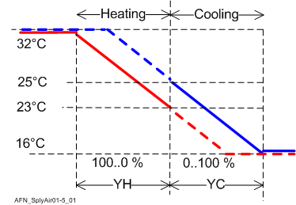

供气温度的供应链设定值 (SplySpTSu11)
Overview
应用功能》Supply chain setpoint for supply air temperature 11" (SplySpTSu11) 提供取决于空气转换条件 (ChoAirModCmd) 的供气设定点值。为了管理房间部分的再加热效率，收集再热器位置，当 ChoAirModCmd = 加热或冷却时，10 个最高位置的平均值将改变供应温度。
Function
中央AHU可以输送冷空气或暖空气以进行冷却或加热。该决策是在 AF SplyChovrAir11 中通过计算和评估加热 /cooling 需求（分别为 ChoAirNumHDmd 和 ChoAirNumCDmd）来完成的。该评估确定 ChoAirModCmd = 加热还是冷却（或者两者都不是或中性）。实际状态使用组标签 ChovrCndAir 进行分发，以启用 VAV 控制加热或冷却。
ChoAirModCmd = Heating
供应设定点将位于左侧（较暖）
ChoAirModCmd = Cooling
供应设定点将位于右侧（较冷）
ChoAirModCmd = Neither
VAV 房间内的供暖控制和制冷控制均被阻止。
供应设定点为：
SpHiTSu = TSuMax
SpLoTSu = TSuMin
ChoAirModCmd = Neutral
VAV 房间内的供暖控制和制冷控制均已启用。
供应设定点为：
SpHiTSu = SttValC
SpLoTSu = SttValH

Configuration
 Objects
Objects
描述 | 目的 | 类型 | 默认值 |
|---|---|---|---|
Maximum supply air temperature 5...50 [°C], 41.0...122.0 [°F] | TSuMax | ACnfVal | 32 [°C], 89.6 [°F] |
Minimum supply air temperature 5...50 [°C], 41.0...122.0 [°F] | TSuMin | ACnfVal | 16 [°C], 60.8 [°F] |
Start value for cooling 5...50 [°C], 41.0...122.0 [°F] | SttValC | ACnfVal | 24 [°C], 75.2 [°F] |
Start value for heating 5...50 [°C], 41.0...122.0 [°F] | SttValH | ACnfVal | 22 [°C], 71.6 [°F] |
 Parameters
Parameters
描述 | 范围 | 默认值 |
|---|---|---|
Maximum shift of setpoint supply air temperature（对于再热器影响） | SpTSuShftMax | 5 [K], 9.0 [°F] |
Start value reheating coil valve position for shift（对于再热器影响） | SttReHclVlv | 10 [%] |
End value reheating coil valve position for shift（对于再热器影响） | EndReHclVlv | 50 [%] |
Temperature difference unit | TDiffUnit | [K] |
Interface
界面 | 描述 | 类型 | 参考号 | 拥有者 |
|---|---|---|---|---|
SpHiTSu | Setpoint high for supply air temperature | APrcVal | ● | - |
SpLoTSu | Setpoint low for supply air temperature | APrcVal | ● | - |
ReHclVlvPosEvl | Reheating coil valve position evaluation | ACalcVal | ● | - |
EvlTSuCDmdMax | Evaluated maximum cooling demand for supply air temperature | ACalcVal | ● | - |
EvlNumTSuCDmd | Evaluated number of cooling demand for supply air temperature | ACalcVal | ● | - |
EvlTSuHDmdMax | Evaluated maximum heating demand for supply air temperature | ACalcVal | ● | - |
EvlNumTSuHDmd | Evaluated number of heating demand for supply air temperature | ACalcVal | ● | - |
SplyAirMst | Manager for supply chain air | GrpMaster | ◉ | SplyAir11 |
TSuMax | Maximum supply air temperature | ACnfVal | ● | - |
TSuMin | Minimum supply air temperature | ACnfVal | ● | - |
SttValC | Start value for cooling | ACnfVal | ● | - |
SttValH | Start value for heating | ACnfVal | ● | - |
Engineering and commissioning
请参阅配置部分。